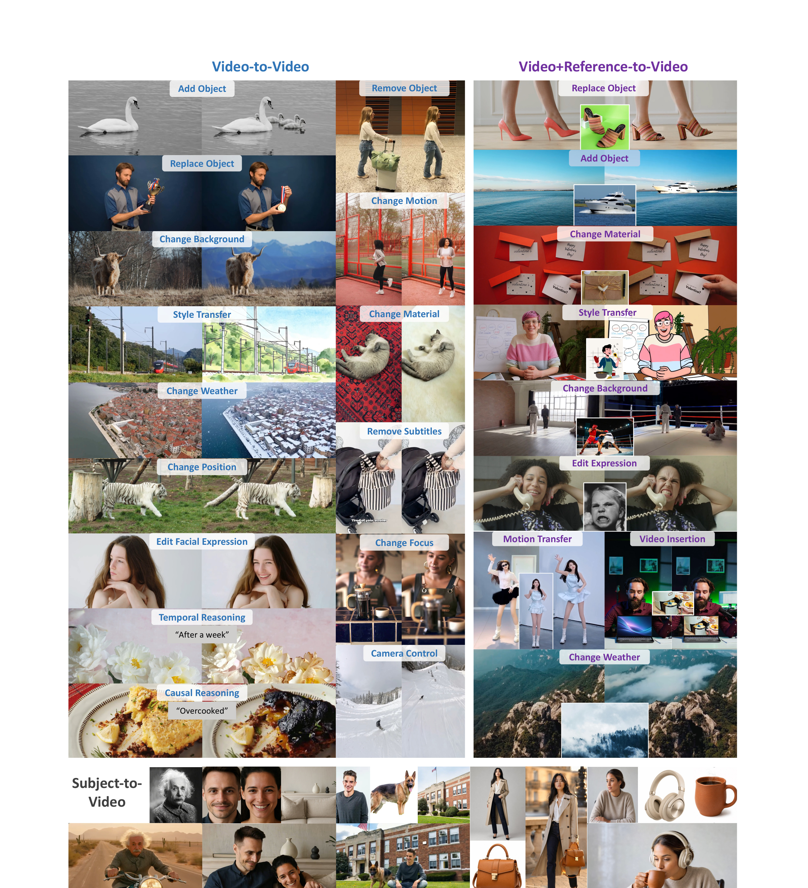
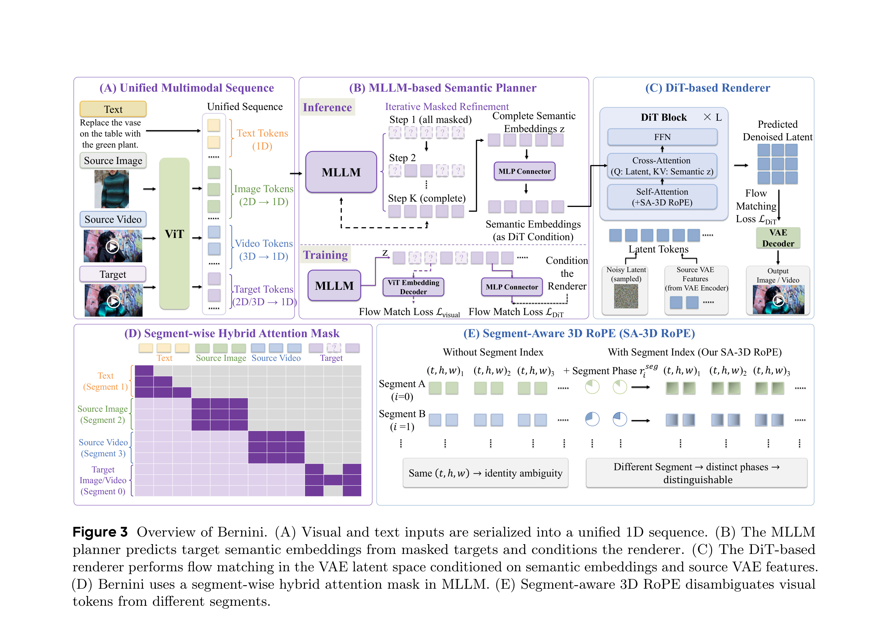
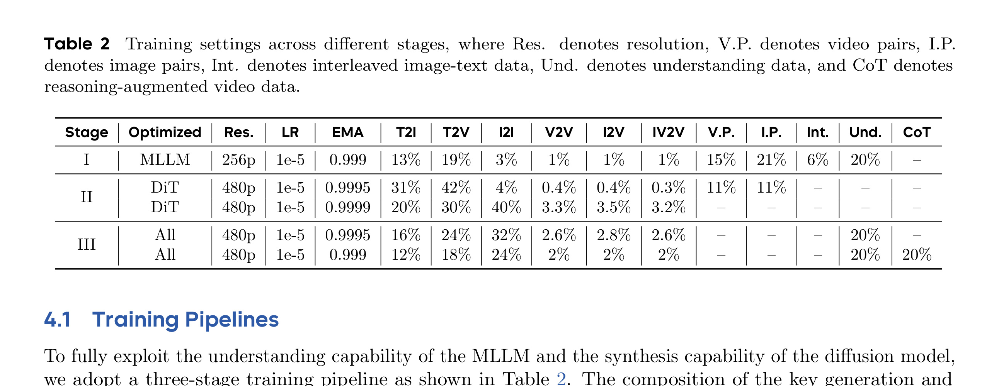
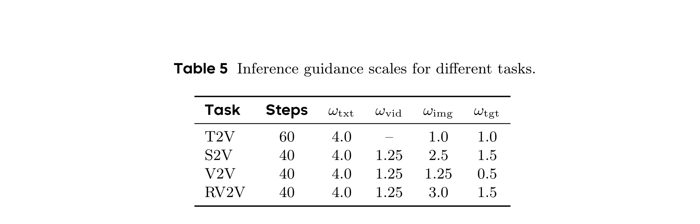
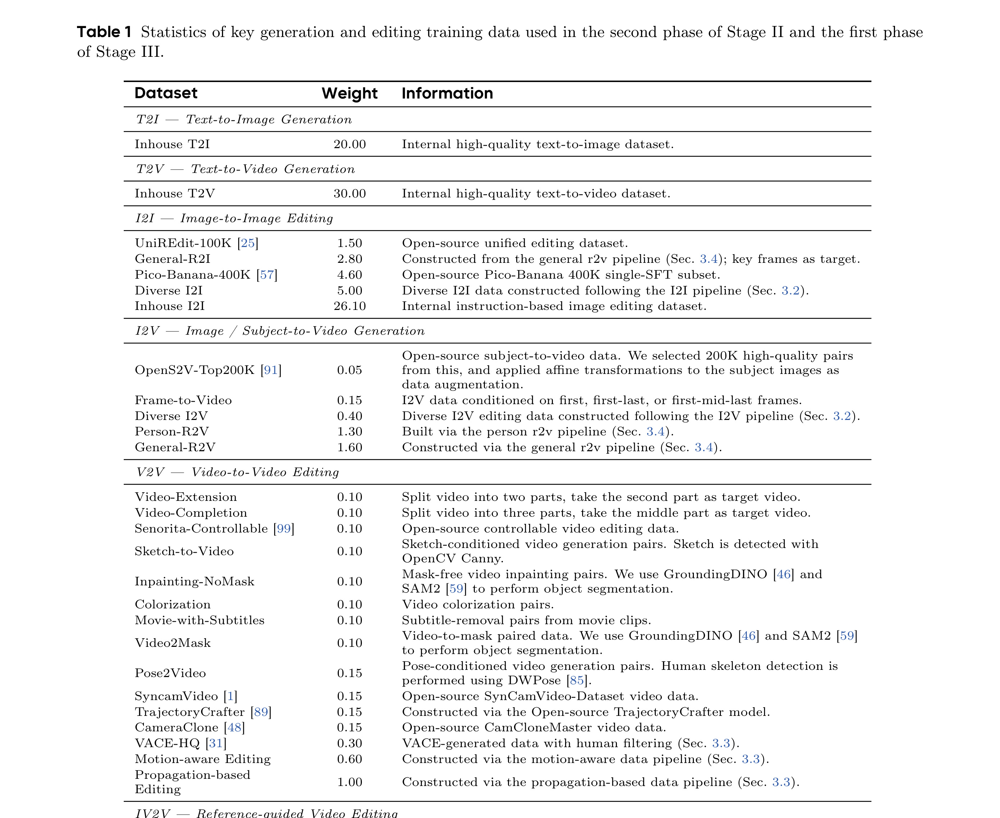
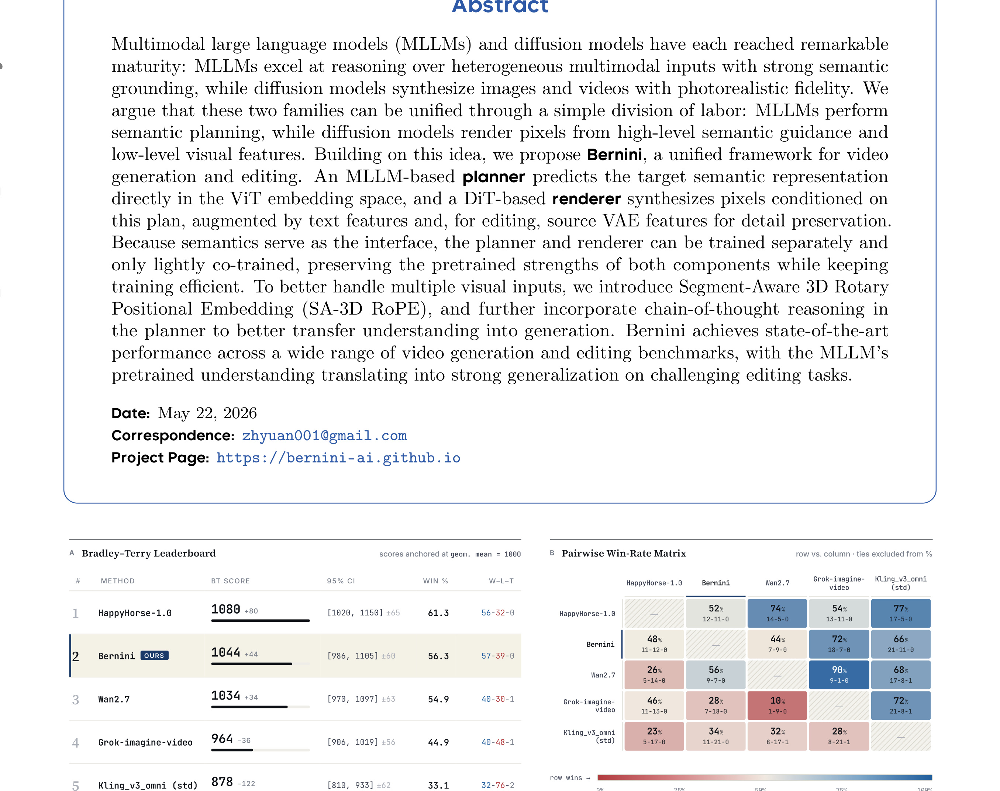
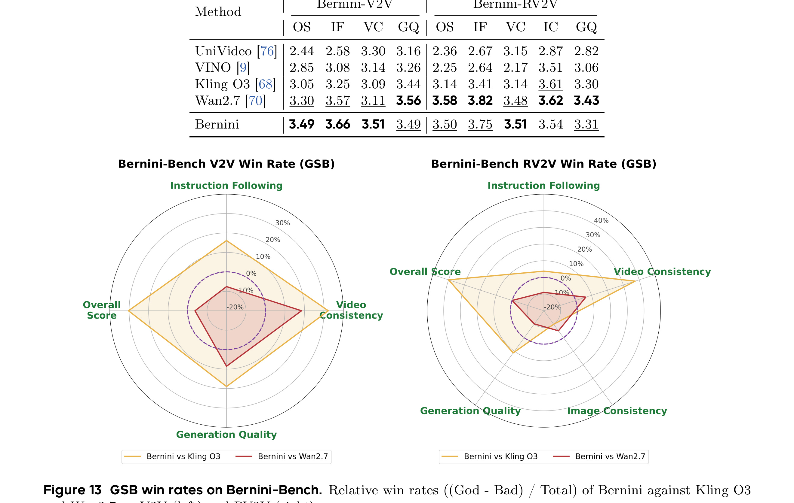
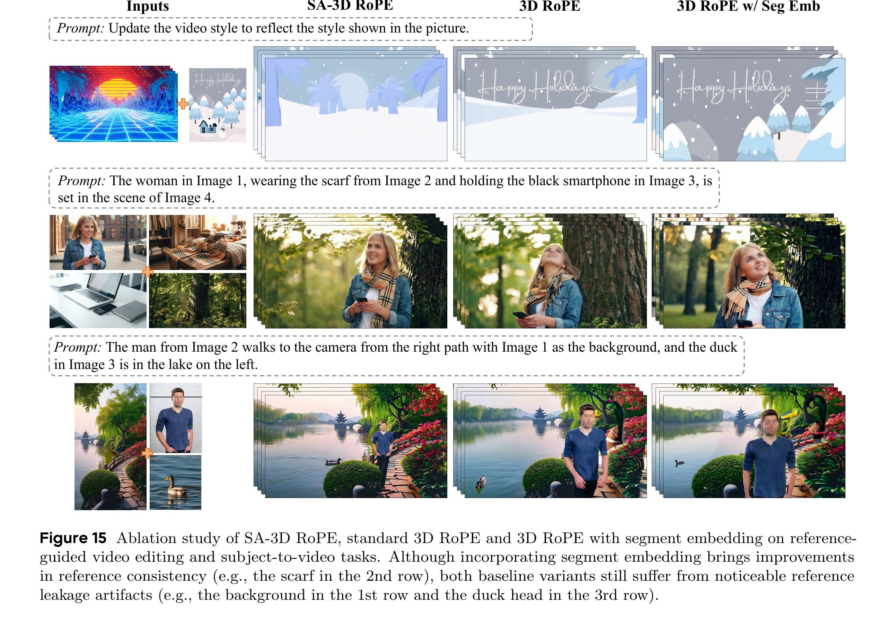

这篇 arXiv 论文《Bernini: Latent Semantic Planning for Video Diffusion》来自 ByteDance / Bernini Team，作者包括 Chenchen Liu、Junyi Chen、Lei Li、Lu Chi、Mingzhen Sun、Zhuoying Li、Yi Fu、Ruoyu Guo、Yiheng Wu、Ge Bai 和 Zehuan Yuan；论文入口是 arXiv:2605.22344。它把多模态大模型负责“理解和规划”、扩散 Transformer 负责“像素级渲染”这件事做成了一个统一视频生成与编辑系统，项目页为 Bernini project page，本轮未核验到公开代码仓库。阅读重点不是把 Bernini 当成又一个视频生成模型，而是看它如何选择 ViT embedding 作为 MLLM 与 DiT 之间的语义接口，如何用 masked latent planning、SA-3D RoPE、三阶段训练和 CoT 数据把理解能力迁移到视频编辑与生成。
1. 背景和问题
视频生成模型近两年的主线大多沿着扩散模型、DiT、VAE latent、text conditioning、时空注意力和高质量数据构造推进。它们在像素保真度、运动连续性、风格迁移和文本对齐上进步很快，但对复杂指令的“理解”仍然常常外包给文本编码器或 prompt engineering。另一方面，多模态大模型已经具备更强的视觉-语言理解能力：它可以读长指令、比较多张参考图、识别对象关系、解释场景变化，甚至进行一定的因果或时间推理。Bernini 的出发点就是把这两类模型的成熟能力分工：MLLM 不直接生成像素，而是先在潜在语义空间里规划目标视觉表示；扩散模型不负责复杂推理，而是根据语义计划、文本特征和源视频/图像的低层 VAE 特征完成渲染。
这个问题之所以重要，是因为视频编辑与视频生成的难点并不相同。Text-to-video 更关注文本是否能决定场景、对象、动作和风格；subject-to-video 要把参考主体身份迁移到新视频；video-to-video 编辑要保留源视频的背景、身份、镜头和运动，又要只改变指令指定的属性；reference-guided editing 还要同时处理源视频和参考图像/视频。若每个任务都设计一套独立结构，系统会变成多个模型拼接，训练数据、推理接口和评估口径都很难统一。若只用一个通用扩散模型吞下所有条件，又容易把“理解复杂条件”和“保持像素细节”压到同一个模块里，导致模型既要推理又要渲染，训练效率和泛化能力都会受到限制。
Bernini 的关键假设是：语义信号不需要高分辨率，少量目标 ViT token 就足以指定场景骨架、对象关系、风格意图和编辑目标；低层细节则应交给 VAE latent 与 source features 保留。这个假设把系统拆成两个接口：高层语义接口和低层视觉接口。高层接口使用 MLLM 自己已经习惯处理的 ViT embedding space，而不是把 MLLM 输出的文本 token 再翻译成 prompt；低层接口使用 DiT 在 VAE latent space 中做 flow matching denoising，并在编辑任务里注入源 VAE features。这样，MLLM 的理解能力可以通过连续视觉 embedding 进入生成过程，扩散模型则避免承担完整语义推理负担。

Figure 2 展示了 Bernini 希望覆盖的任务宽度：text-to-video、subject-to-video、video-to-video、video+reference-to-video、camera control、motion transfer、remove subtitles、change background、change weather、style transfer、temporal reasoning 和 causal reasoning 等都被放进同一个框架。图中最值得注意的不是案例数量，而是任务条件的异质性：有些输入只有文本，有些输入包含源视频，有些还包含参考图像或参考视频；有些修改局部对象，有些修改运动轨迹，有些修改时间状态或因果结果。Bernini 要解决的正是这种异质条件如何被统一成模型可处理的序列，并进一步传给渲染器。对工程系统来说，这相当于把“编辑指令分类器 + 多个专用生成模型”的组合，改成一个统一多模态序列入口和一个统一 latent planning-to-rendering pipeline。
从相关工作角度看，已有视频编辑路线大致有三类。第一类是直接在扩散模型条件侧增强控制，例如加入 ControlNet、reference attention、mask、pose 或 depth；这类方法对局部控制有效，但对长指令和多参考关系的抽象推理能力有限。第二类是用 LLM 或 MLLM 做 prompt rewriting 或 planning，再把结果作为文本提示交给生成模型；这能改善指令表达，却仍然把语义计划压缩成自然语言，无法把 MLLM 内部视觉表征直接传给渲染器。第三类是统一多模态生成模型，试图让同一个模型同时理解和生成，但训练代价高，且容易破坏预训练 MLLM 的理解能力或扩散模型的视觉质量。Bernini 选择的是中间路线：保留 MLLM 和 DiT 的预训练优势，通过 ViT embedding semantic bridge 做轻量对齐。
这篇论文的问题定义可以写成一句话：如何让 MLLM 的多模态理解和扩散模型的视频合成能力在同一个视频生成/编辑系统中协同工作，同时避免端到端大规模重训带来的能力破坏和成本爆炸。它的回答包含四个技术点：第一，用统一多模态序列把文本、源图、源视频和目标占位符串起来；第二，让 MLLM planner 通过 masked refinement 预测目标 ViT embeddings；第三，让 DiT renderer 在 VAE latent space 中条件于这些 semantic embeddings 和源 VAE features；第四，用 SA-3D RoPE、数据构造、三阶段训练和推理 guidance 解决多段视觉输入、编辑保真和任务泛化问题。后文方法部分会围绕这四点展开。
2. 方法
2.1 总体架构：MLLM planner 与 DiT renderer 的语义接口
Bernini 的整体架构由两个主模块组成：MLLM-based semantic planner 和 DiT-based renderer。planner 接收统一多模态序列，输出目标视觉内容在 ViT embedding space 中的语义表示；renderer 接收这个语义表示、文本特征，以及编辑任务中的源 VAE features，在 VAE latent space 里执行 flow matching denoising，最后由 VAE decoder 解码成图像或视频。这个结构的核心不是简单“MLLM + DiT”，而是把二者之间的接口定在 MLLM 自己已经理解的 ViT embedding space。换句话说，MLLM 不需要学会直接输出像素，也不需要把规划结果写成文本 prompt；它只需要补全目标视觉 token 的连续 embedding。

Figure 3 是论文最关键的方法图。A 部分把文本 token、图像 token、视频 token 和目标 token 都序列化成一维统一序列；B 部分显示 MLLM planner 从全 masked target 开始，通过 iterative masked refinement 逐步得到完整 semantic embeddings $z$；C 部分展示 DiT renderer 以 latent tokens 为查询，通过 cross-attention 读取 semantic embeddings，同时结合 source VAE features 和 flow matching loss 生成输出；D 部分是 segment-wise hybrid attention mask，用于控制不同 segment 之间的信息可见性；E 部分是 SA-3D RoPE，它给相同 $(t,h,w)$ 坐标但来自不同 segment 的视觉 token 加上 segment-dependent phase，避免多个参考输入和目标输出在时空位置编码上发生身份混淆。这张图说明 Bernini 的创新不在单一模块，而在从输入序列、语义预测、渲染条件到位置编码的一整套接口设计。
统一输入公式可以概括为：给定文本 embedding、多个源视觉输入的 ViT embeddings 和目标视觉 embedding，MLLM 产生上下文化 hidden states：
符号解释：$t$ 是输入文本 embedding，$v_{srci}$ 是第 $i$ 个源视觉输入的 ViT embedding，$N$ 是源输入数量，$v_{tgt}$ 是目标输出的视觉 embedding。训练时，$v_{tgt}$ 被随机 mask 一部分；推理时，$v_{tgt}$ 从全 mask 状态开始。$z$ 是 MLLM 输出的上下文化隐藏状态，它既包含文本指令、源视觉上下文，也包含对目标视觉状态的语义预测。这个公式体现了 Bernini 的基本建模选择：目标不是由文本单独决定，而是由文本、源图像、源视频、参考输入和目标占位符共同决定。
这个接口有两个优点。第一，它把 MLLM 的理解能力保留在连续视觉表示里。ViT embedding 已经是 MLLM 处理图像和视频语义的内部语言，planner 预测它比预测离散视觉 token 或文本 prompt 更自然。第二，它把 renderer 的工作限定为“从语义计划到像素渲染”。DiT 不必重新理解所有多模态上下文，只需通过 cross-attention 使用 planner 提供的 semantic embeddings，并在编辑场景中读取 source VAE features 保留低层细节。这样的解耦使 planner 和 renderer 可以先分开训练，再轻量联合训练，从而降低相互干扰。
2.2 Mask-based semantic planning：从全 mask 到目标 ViT embedding
planner 的训练采用 masked generative modeling。论文认为视觉语义 latent 天然是双向的：目标图像或视频的一个 token 既受前文影响，也受后文和空间邻域影响，因此纯自回归并不一定最适合预测目标视觉表示。训练时，目标 ViT tokens 的一部分被随机 mask，MLLM 需要结合剩余目标 token、文本和源视觉上下文恢复被 mask 的 token。mask ratio 从 Beta 分布采样：
符号解释：$r$ 是当前样本的目标 token mask ratio，$\alpha$ 和 $\beta$ 是任务相关超参数。论文后续 Table 3 给出不同任务的配置：T2I、T2V、I2I、I2V、V2V、IV2V 的 $\alpha$ 逐渐增大，$\beta$ 逐渐接近或低于 1，这意味着越依赖源输入的编辑任务，mask ratio 越偏向高值。直觉是编辑任务中源与目标高度相关，如果可见 target token 太多，planner 可能通过低层相似性“偷看”答案，而不是学习从指令和源输入中推断目标语义。因此更高 mask ratio 强迫模型用上下文推理目标变化。
masked tokens 的恢复不是分类到离散码本，而是在连续 ViT embedding space 中进行。论文在 MLLM 上接一个 lightweight ViT embedding decoder，由 MLP 和 ResNet-based prediction head 组成，用 flow matching objective 预测 ground-truth ViT embeddings。这样做避免离散 tokenization 带来的视觉信息损失，也使 planner 输出天然可作为 renderer 的 semantic condition。推理时，所有目标 token 初始化为 mask token，然后执行 $K$ 步 iterative masked refinement。论文给出的 mask schedule 是：
符号解释：$k$ 是当前 refinement step，$K$ 是总 refinement step 数，$\mathrm{mask\_ratio}(k,K)$ 控制当前仍保持 mask 的 token 比例。随着 $k$ 增大，mask ratio 逐步降低，模型从粗到细填充目标 ViT embedding。每一步中，已预测 token 会反馈给 MLLM 作为下一轮观察，剩余 masked tokens 再被预测。这个过程类似视觉 semantic space 中的逐步草图完善：先确定场景和对象布局，再补充局部属性、动作和风格细节。
这个设计和普通 prompt enhancer 的差异很大。prompt enhancer 只能产生更详细的自然语言提示，renderer 仍需自己从文本推断视觉结构；Bernini 的 planner 直接预测目标视觉 embedding，使 MLLM 的视觉理解结果以连续向量形式进入 DiT。它也不同于把 MLLM 作为控制器调用多个外部模型，因为 Bernini 没有在推理时拆成多次工具调用，而是把 semantic planning 固化为模型内部 forward。论文还指出，planner 的迭代开销相对 DiT rendering 几乎可以忽略，因为视频 diffusion sampling 才是主要计算瓶颈。这一点对系统落地重要：如果 semantic planning 显著增加延迟，它的收益就很难抵消；但若开销只占小头，就可以把 MLLM 理解能力作为高价值条件注入。
2.3 DiT renderer：VAE latent flow matching 与源细节保持
renderer 是一个 DiT-based diffusion transformer，它在 VAE latent space 中做生成。它的输入包括 noisy latent tokens、planner 输出的 semantic embeddings $z$、文本特征，以及编辑任务中的 source VAE features。DiT block 内部通过 self-attention 建模 latent tokens，通过 cross-attention 读取 semantic condition。source VAE features 的作用是保留源输入中的低层细节，例如人物身份、背景纹理、镜头运动、局部光照和时序一致性。这样，semantic embeddings 负责“目标应该是什么”，source VAE features 负责“哪些低层内容不应被破坏”。
训练目标包含三类 loss：next-token prediction loss、ViT embedding space 的 visual flow matching loss、VAE latent space 的 DiT flow matching loss。论文给出的总目标是：
符号解释：$\mathcal{L}_{ntp}$ 是 MLLM 的标准 next-token prediction loss，用于保留语言和多模态理解能力；$\mathcal{L}_{visual}$ 是 ViT embedding decoder 的 flow matching loss，用于让 planner 学会预测目标视觉语义；$\mathcal{L}_{dit}$ 是 DiT renderer 在 VAE latent space 中的 flow matching loss，用于生成最终图像/视频；$\lambda_{text}$、$\lambda_{visual}$ 和 $\lambda_{dit}$ 是权重。这个目标体现了 Bernini 的平衡：既不能只训练生成而破坏 MLLM 的理解，也不能只保留理解而让 renderer 无法跟上 semantic plan。
Flow matching 的价值在于把生成视为从噪声 latent 到数据 latent 的速度场学习。对 Bernini 来说，同样形式被用于两个连续空间：ViT embedding space 和 VAE latent space。前者让 planner 学会补全目标语义，后者让 renderer 学会渲染像素。虽然论文没有把每个 flow matching 细节展开成完整推导，但系统层面可以理解为：planner 先在较低维、语义密集的空间中“画出目标”，renderer 再在更高维、细节密集的空间中“把目标渲染出来”。这使 semantic planning 和 visual rendering 既共享连续生成思想，又保留各自空间的职责。
在视频编辑中，source VAE features 尤其关键。如果只用 semantic embedding，模型可能理解了编辑意图，却无法保持源视频的低层身份和时序；如果只用 source features，模型可能过度复制源视频，无法执行复杂指令。Bernini 的 renderer 把二者并列作为条件：semantic embeddings 通过 cross-attention 提供高层目标，source VAE features 提供低层保真。对视频编辑而言，这相当于把“改什么”和“保留什么”拆开。复杂编辑失败往往来自这两者混淆：模型要么改动太少，要么把不该改的区域也重绘。Bernini 的结构试图在模型内部提供一个更明确的分工。
2.4 Segment-Aware 3D RoPE：解决多段视觉输入的身份混淆
在统一序列中，Bernini 可能同时包含多个 visual segments：源图像、源视频、参考图像、参考视频和目标输出。标准 3D RoPE 只编码时间、高度、宽度坐标，即 $(t,h,w)$。问题是不同 segment 中的 token 可能具有相同的 $(t,h,w)$，例如第一张参考图和第二张参考图都从左上角开始，或者源视频和目标视频的第一个 frame token 坐标一致。若位置编码只看 $(t,h,w)$，attention 很难区分“这是哪个 segment 的同一位置”，从而造成身份、对象或条件来源混淆。
Bernini 提出 Segment-Aware 3D RoPE。标准 3D RoPE 给每个视觉 token 构造时空旋转频率 $r_{t,h,w}$；SA-3D RoPE 再为每个 segment index $i$ 构造一个 full-dimensional rotary frequency vector $r_{seg_i}$，并做复数逐元素乘法：
符号解释：$r_{t,h,w}$ 是原始时空位置对应的 rotary phase，$r_{seg_i}$ 是第 $i$ 个 segment 的 segment phase，$\odot$ 表示复数按元素相乘，$\tilde{r}_{t,h,w,i}$ 是同时包含时空坐标和 segment 身份的旋转编码。这个公式的直觉是：保留原有时空结构，但给不同 segment 加一个全局相位偏移。于是相同 $(t,h,w)$ 的 token 在不同 segment 中不再共享完全相同的位置相位，attention 可以区分“同一坐标、不同来源”。
这项改动看似小，但对 reference-guided video generation 和 editing 很重要。假设一个任务要求“把参考图中的绿色植物替换到源视频桌上的花瓶位置”，模型需要同时区分源视频中的花瓶、参考图中的植物和目标视频中的新植物。如果位置编码不区分 segment，source 与 reference 的相同空间坐标可能被混淆，导致复制错误、对象身份错配或编辑区域漂移。SA-3D RoPE 为 segment identity 提供了结构性编码，比简单加 segment embedding 更贴合 RoPE 的相位机制。论文后续消融也显示，SA-3D RoPE 在 reference-guided video editing 和 subject-to-video 上优于标准 3D RoPE 与 segment embedding 变体。
同时，Bernini 还使用 segment-wise hybrid attention mask。它的作用是让不同 segment 之间的信息流符合任务语义：文本、源视觉、目标 mask token 和已预测目标 token 不应全部无约束互看。虽然论文没有把 mask 矩阵逐项展开到实现级别，但 Figure 3D 表明系统在 MLLM 内部区分不同 segment 的注意力关系。这个设计与 SA-3D RoPE 是互补的：attention mask 控制“谁能看谁”，SA-3D RoPE 控制“看到的 token 来自哪个 segment”。对于多参考、多视频、多目标占位的统一框架，二者都是避免条件混乱的基础设施。
2.5 数据构造与三阶段训练
Bernini 的训练数据覆盖 text-only、multimodal understanding、image/video generation、image/video editing、reference-guided generation/editing 和 reasoning-augmented video editing。论文用了大量篇幅描述数据构造，原因很直接：统一视频生成与编辑不是只靠架构能解决的，模型必须看到足够多样的任务组合。数据部分包括 20M video pairs、近 30M image pairs、interleaved image-text data、diverse image editing and image-to-video editing data、high-quality video-to-video editing data、reference-image-guided generation/editing data、reference-video-guided motion transfer data，以及 CoT reasoning-augmented video data。

Table 2 展示三阶段训练设置。Stage I 只优化 MLLM planner，在 256p、2 fps 上训练，目标是让 MLLM 从纯理解模型转成 semantic planner；Stage II 只优化 DiT renderer，在 480p、16 fps 上训练，目标是让 renderer 学会高质量生成与编辑；Stage III 再联合训练 planner 和 renderer，在 480p、16 fps 上对齐 semantic planning 和 visual rendering。表中不同任务配比显示，Bernini 不是把所有数据混成一个池子，而是按阶段调整 T2I、T2V、I2I、V2V、I2V、IV2V、video pairs、image pairs、interleaved data、understanding data 和 CoT data 的占比。这个 curriculum 的作用是先分别稳定理解和渲染，再轻量耦合。
Stage I 的目标是训练 MLLM + ViT embedding decoder。训练 objective 是 $\lambda_{text}\mathcal{L}_{ntp}+\lambda_{visual}\mathcal{L}_{visual}$，其中论文给出 $\lambda_{text}=0.2$、$\lambda_{visual}=1$。这里加入 $\mathcal{L}_{ntp}$ 很关键，因为如果完全只训练 visual prediction，MLLM 的语言和多模态理解能力可能被破坏。Stage I 使用 progressive data curriculum：先用大规模 text-to-image 建立语义空间生成能力，再扩展到 text-to-video、image-pair 和 video-pair，最后加入 multimodal understanding 和 text understanding 数据保留预训练能力。
Stage II 训练 DiT renderer 和轻量文本编码器。renderer 只看 text features、source VAE features 等条件，先学会独立的图像/视频生成与编辑能力。论文提到 pair data 在早期有助于泛化和编辑质量，但过多 pair data 会削弱 instruction following 和非编辑区域一致性，因此采用 linearly decayed sampling strategy：开始时 pair data 比例高，后期逐渐降到 0，让高质量编辑数据主导细化。这个细节体现了视频编辑训练中的一个常见矛盾：pair data 容易规模化，但指令质量和局部一致性未必足够；高质量编辑数据规模更小，但对最终行为更重要。
Stage III 联合训练整个 Bernini。此时使用完整目标 $\mathcal{L}$，论文给出 $\lambda_{ntp}=0.2$，$\lambda_{visual}=\lambda_{dit}=1$。训练时，文本、source ViT tokens 和 masked target ViT tokens 输入 MLLM；MLLM 的 text/source/unmasked hidden states 作为 diffusion condition，masked target hidden states 送入 ViT embedding decoder 计算 $\mathcal{L}_{visual}$。后期还加入 CoT 数据，鼓励模型在对象动态、时间变化和编辑意图上进行显式语义规划。作者强调 Stage III 是 light co-training，目的是对齐接口，而不是从头训练一个巨大统一模型。这一点很重要：Bernini 的系统哲学是“保留预训练强项 + 轻量桥接”，不是“端到端把所有能力重新学一遍”。
2.6 推理策略与多源 guidance
推理阶段分两步：先用 MLLM 规划目标 ViT embeddings，再用 DiT 渲染最终视频。论文默认用 25 个 iterative planning steps 预测完整目标 semantic embedding sequence；每个 planning step 中，ViT embedding decoder 用 5 个 diffusion denoising steps 在 ViT embedding space 里细化预测，并使用 text guidance scale 1.2、image guidance scale 1.0。得到全部目标 ViT embeddings 后，它们再和文本、源 ViT embeddings 一起输入 MLLM，产生用于 DiT renderer 的 contextualized hidden states。

Table 5 给出不同任务的推理 guidance scales。T2V 使用 60 步，$\omega_{txt}=4.0$，$\omega_{img}=1.0$，$\omega_{tgt}=1.0$；S2V、V2V、RV2V 使用 40 步，但视频、图像和目标条件的 guidance 权重不同。例如 V2V 的 $\omega_{tgt}=0.5$，这说明编辑任务中不能让目标语义条件过度压倒 source consistency；RV2V 的 $\omega_{img}=3.0$、$\omega_{tgt}=1.5$，说明参考图对结果身份或对象控制更重要。这个表很有工程价值，因为它表明统一模型并不等于所有任务用同一套 guidance，服务侧仍需按任务类型设置条件强度。
论文还在数据构造中给出 motion-aware editing 的双分支 guidance 公式，用于构造人-物交互等需要动作适应的数据。形式上，I2V 分支强调根据 edited first frame 引入 motion adaptation，V2V 分支强调保留 source motion consistency：
符号解释：$I$ 是 edited first frame，$V$ 是 source video，$T_{I2V}$ 和 $T_{V2V}$ 是两个分支的文本提示，$\epsilon(\cdot)$ 表示对应条件下的噪声预测，$w$ 是 classifier-free guidance 权重，$\alpha$ 与 $\beta$ 控制 I2V 与 V2V 分支贡献。这个公式出现在数据构造而非最终 Bernini 推理主流程中，但它说明作者在训练数据层面也显式处理“动作适应”和“源运动保持”的矛盾。对视频编辑系统而言，这类矛盾非常常见：替换一个人手中的物体后，手部姿态应随之合理变化；但背景、镜头和整体运动又不应漂移。
从实现角度看，Bernini 推理链路至少包含四类可调参数：planner refinement steps、ViT embedding decoder denoising steps、DiT rendering steps、各条件 guidance scales。论文声称 planner 额外成本相对 DiT rendering 可忽略，但这需要建立在具体实现和硬件上。若本地复现，应分别记录 MLLM planner time、ViT decoder time、DiT renderer time、VAE decode time，以及不同任务下 guidance 对保真、指令遵循和运动一致性的影响。统一模型的好处是接口统一，风险是服务参数变多，若没有任务级配置和失败样本归因，线上调参会非常困难。
3. 实验结果
3.1 数据、训练资源和 benchmark 设置
Bernini 的实验覆盖视频编辑、reasoning-augmented video editing、video generation、subject-to-video、ablation 和 generalization。论文提出 Bernini-Bench 作为更开放的视频编辑评测，包含 22 个细粒度 V2V 编辑任务，覆盖 Subject Editing、Scene & Environment、Visual & Style、Camera & Motion、Advanced Reasoning 五个维度。除此之外，它还在 OpenVE-Bench、EditVerse、FiVE、VBench 和 OpenS2V 上比较。评估方式包括 GPT/Gemini judge、人类 pairwise preference、GSB win rate、VBench 指标、subject preservation 和 open-domain S2V 指标。

Table 1 汇总了第二阶段后期和第三阶段前期的关键 generation/editing training data。表中可以看到数据被分成 T2I、T2V、I2I、I2V、V2V、IV2V 等大类，并给出每类内部数据源与采样权重。例如 T2I 和 T2V 使用内部高质量生成数据；I2I 包含 UniREdit、Pico-Banana、Diverse I2I 和 Inhouse I2I；V2V 包含 Video-Extension、Video-Completion、subtitle removal、pose2video、VACE-HQ、Motion-aware Editing、Propagation-based Editing 等；IV2V 包含 motion transfer、propagation、motion-aware editing reference、person-RV2V 等。这个表说明 Bernini 的效果不只是架构带来，也依赖一套复杂的数据工程。尤其是 video editing 数据，作者并没有简单依赖公开数据，而是通过 propagation、image editing model、MLLM prompt generation、motion-aware synthesis 和 reference construction 扩大任务覆盖。
实验设置中还有一个值得注意的点：Bernini 在不同任务上比较的 baseline 包括 Kling O3、Wan2.7、VINO、HunyuanVideo、Seedance、Veo3、Vidu、Sora 等生成/编辑系统。由于很多商业系统不可完全复现，论文采用 pairwise human preference 和 model judge 的方式进行相对评测。这类评测本身有主观性，尤其是视频质量、指令遵循和时间一致性很难用一个标量刻画。因此解读实验时应把定量表格、偏好矩阵、定性案例和消融一起看，而不是只引用某个 win rate。
3.2 视频编辑主结果：Bernini-Bench、开放式排行榜与定量比较
Figure 12 展示 Bernini-Bench 的任务结构。它把视频编辑拆成 5 个维度和 22 个细粒度任务，包括 subject insertion、subject removal、object replacement、expression editing、background change、weather change、style transfer、camera control、motion transfer、temporal reasoning 和 causal reasoning 等。这个 benchmark 的价值在于它不像传统编辑评测只覆盖有限模板，而是更接近真实用户会提出的开放式视频编辑需求。对 Bernini 来说，这正好检验 MLLM planner 是否真的把理解能力转化为生成能力：如果任务只要求简单风格迁移，纯扩散模型也可能表现很好；如果任务涉及“after a week”“overcooked”这类时间或因果推理，planner 的语义优势才有机会显现。

Figure 1 给出 open-ended video editing 的 pairwise human preference 排行榜。图中 A 部分使用 Bradley-Terry scores 和 95% bootstrap confidence intervals，B 部分给出 win-rate matrix。Bernini 在排行榜中位于最高位置，Win % 和 BT score 都明显领先平均对手。需要注意，图注说明 Bernini 为 480p/24fps，baselines 为 720p/24fps，这意味着 Bernini 并不是靠更高分辨率取胜，而是在开放式编辑偏好中获得更高人类选择率。这个结果支持论文的核心论点：MLLM semantic planning 能改善复杂编辑的语义正确性和整体偏好，而不仅是提升视觉清晰度。

Figure 13 展示 Bernini 在 Bernini-Bench 上相对 Kling O3 和 Wan2.7 的 GSB win rates，分别覆盖 V2V 和 RV2V。图中整体趋势是 Bernini 在多数细分任务上取得正向偏好，尤其在 reference-guided editing、复杂对象替换、运动控制和 reasoning 任务中优势更明显。GSB 指标的好处是把 Good、Same、Bad 的相对判断转成净胜率，能更细地反映模型是否真的比对手好，而不是只看单次胜负。但它也依赖评测 prompt、视频展示方式和人工/模型 judge 稳定性。更可靠的结论是：Bernini 在作者构造的开放式编辑任务集上展示了系统性优势，尤其适合多条件、复杂语义和参考引导场景。
Table 6 给出 Bernini-V2V 和 RV2V 的定量结果。虽然截图中表格较宽，但可以看到比较对象包括 Kling O3、Wan2.7、HunyuanVideo、VINO 等，指标包含不同 judge 或偏好维度。Bernini 在 V2V 和 RV2V 两个设置下均取得领先或接近领先。这个表与 Figure 13 形成互补：Figure 13 看细粒度任务的偏好分布，Table 6 看整体数值结果。最重要的实验信号是 RV2V 任务，因为它要求模型同时理解源视频、编辑指令和参考图像。若没有 segment-aware position encoding 和统一多模态序列，参考图像很容易被忽略或错误复制；Bernini 在 RV2V 上表现好，说明它的多 segment 处理机制确实可能发挥作用。
论文还在 OpenVE-Bench、EditVerse 和 FiVE 上报告比较。OpenVE-Bench 使用 Gemini 2.5 Pro 做评估，EditVerse 和 FiVE 覆盖不同类型的视频编辑质量。作者声称 Bernini 达到 state-of-the-art performance。这里需要保守看待：不同 benchmark 的 judge、视频长度、分辨率、prompt 分布、baseline 版本和采样策略都可能影响结果。真正稳健的判断是：Bernini 在多个独立或半独立评测上没有只在自建 benchmark 上好，说明它的能力不是完全过拟合 Bernini-Bench；但由于代码和完整模型未公开，外部复现实验仍无法验证所有细节。
3.3 视频生成、S2V 和 reasoning-augmented editing
视频生成方面，论文在 VBench 上比较 text-to-video 指标，并在 OpenS2V 上比较 subject-to-video open-domain results。Bernini 作为统一编辑/生成框架，能在生成指标上保持竞争力很重要。若一个系统为了编辑能力牺牲了 T2V 基础质量，它的统一性就会打折。论文结果显示 Bernini 在 VBench 和 OpenS2V 上表现强，说明 semantic planner + renderer 不只是编辑专用结构，也能处理纯生成和主体迁移。
reasoning-augmented video editing 是 Bernini 的另一个亮点。论文比较 baseline、prompt enhancer、自文本 reasoning、自视觉-文本 reasoning 等变体。Table 10 显示加入更丰富 reasoning context 能持续改善 Bernini-V2V benchmark 表现。这个结果符合方法直觉：复杂编辑任务需要先把用户指令重写成更明确的中间意图，或者先在初始帧上形成视觉中间状态，再传播到视频。self-text reasoning 提供语言空间的结构化指令，self-vision-text reasoning 提供视觉空间的中间锚点。Bernini 的 planner 本身已经在 latent semantic space 中工作，因此 CoT 数据不是附加解释，而是直接影响目标 semantic embedding 的规划质量。
不过，reasoning 结果也需要注意边界。CoT 或 prompt rewriting 可能提高复杂任务表现，但也可能引入过度解释、错误中间目标或不必要的编辑范围扩大。视频编辑的“正确”往往不是最大改动，而是精确改动。若 planner 把一句简单指令扩展成过多语义约束，renderer 可能生成看似合理但偏离用户意图的视频。因此本地复现时，reasoning 模块应配合失败样本审计：区分“理解不足导致没改对”和“推理过度导致改太多”。论文给出的正向结果说明 reasoning 有价值，但没有完全消除这类风险。
3.4 消融：SA-3D RoPE、ViT interface 与 MLLM planner

Figure 15 对 SA-3D RoPE、标准 3D RoPE 和带 segment embedding 的 3D RoPE 进行消融，任务包括 reference-guided video editing 和 subject-to-video。结果显示 SA-3D RoPE 更优，说明仅仅给视觉 token 加普通 segment embedding 不如在 rotary phase 中直接编码 segment index。这个结论和方法部分的推理一致：多段视觉输入的混淆发生在时空位置编码层面，如果两个 segment 的 token 共享相同 $(t,h,w)$ phase，attention 可能无法稳定区分来源；segment-aware phase modulation 则在注意力几何结构中内置 segment identity。
论文还消融 ViT semantic interface 和 MLLM planner。Figure 16 讨论去掉 ViT interface 或去掉 MLLM planner 后的效果下降。这个消融是整篇论文最能支撑“latent semantic planning”命题的部分。若把 MLLM 输出压缩成文本，或不用 MLLM 进行目标 embedding 规划，模型就退化成更传统的 text-conditioned diffusion 或弱语义条件生成。性能下降说明 Bernini 的关键不只是多训练了数据或换了更强 renderer，而是 MLLM 的视觉语义表示通过 ViT embedding bridge 真正进入了生成过程。
Figure 17 和 Figure 18 则展示 generalization。多样 I2I/I2V 数据能帮助 Bernini 泛化到更多视频编辑指令，尤其是训练集中不完全覆盖的对象、风格、表达和视角变化。这个结果再次强调数据构造与架构的耦合：MLLM planner 提供理解接口，但如果训练数据缺少足够编辑类型，planner 也难以学会把理解结果映射成可渲染的 semantic embeddings。对工程实践而言，复现 Bernini 思想不能只复现模型结构，还要准备与目标业务相匹配的编辑数据和 reference 数据。
3.5 实验结论与可信度边界
整体来看，Bernini 的实验链条比较完整：自建 Bernini-Bench 检验开放式编辑，OpenVE/EditVerse/FiVE 提供外部编辑评测，VBench 检验 T2V，OpenS2V 检验 subject-to-video，消融验证 SA-3D RoPE、ViT interface 和 MLLM planner，定性案例展示 reasoning 和 generalization。它的主要优势集中在多条件、复杂语义和开放式编辑任务；这正是 MLLM planner 应该发挥作用的地方。
但这篇论文也有明显验证边界。第一，模型、训练数据和代码未公开，很多结果无法外部复现。第二，视频生成与编辑评测高度依赖 judge，尤其是商业 baseline 的版本、参数和采样策略不透明。第三，论文数据工程中大量使用内部高质量数据和 Qwen 系列 MLLM 生成数据，这意味着 Bernini 的效果可能部分来自强数据管线。第四，统一框架的服务复杂度不低，planner、renderer、VAE、T5/text encoder、source feature extraction、guidance scales 和 task routing 都需要工程维护。第五，论文强调 planner 开销相对 DiT 可忽略，但没有给出完整端到端 latency、显存、吞吐和不同任务失败率表。
因此，最稳妥的实验结论是：Bernini 给出了一个可信的系统级方向，证明 MLLM latent semantic planning 可以成为视频扩散模型的高层控制接口，并在多个视频生成/编辑评测上展示强结果；但它还不是一个可直接复现的开源 recipe。后续若要落地，需要等待模型或代码释放，或者在本地用较小 MLLM、公开 DiT、公开视频编辑数据先验证“ViT embedding planner + DiT renderer”这一核心接口是否能带来可测收益。
4. 总结
4.1 我的判断
Bernini 的价值在于把“理解”和“渲染”拆到了正确的层次。过去很多视频编辑系统把 MLLM 用作 prompt enhancer，或者让扩散模型直接吞复杂条件；前者容易丢失视觉内部表征，后者容易让扩散模型承担过多语义推理。Bernini 选择 ViT embedding space 作为桥梁，让 MLLM 直接规划目标视觉语义，再让 DiT 根据该计划生成像素。这个接口既保留了 MLLM 的多模态理解，又让扩散模型继续做自己擅长的视觉合成，是一个很自然但工程要求很高的设计。
我认为这篇论文最值得学习的不是某个单点技巧，而是系统分工：统一多模态序列负责输入协议，masked semantic planning 负责目标表征预测，SA-3D RoPE 负责多 segment 区分，DiT renderer 负责 VAE latent 渲染，三阶段训练负责避免能力破坏，CoT 数据负责把复杂编辑意图转成可生成的中间语义。这些环节缺一不可。只做 SA-3D RoPE 可能只是位置编码改良；只做 prompt rewriting 仍然停留在文本接口；只做联合训练可能成本太高且破坏预训练能力。Bernini 的完整贡献是把这些部件组合成一条可解释的 planning-to-rendering pipeline。
4.2 工程启发与复现建议
如果本地要借鉴 Bernini，第一步不应直接训练大模型，而是做接口验证。可以先选择一个较小 MLLM 和已有 image/video diffusion backbone，验证 MLLM hidden states 或 ViT embeddings 作为 cross-attention condition 是否比文本 prompt 更稳定。第二步再做 masked target embedding prediction，检查 planner 输出是否能在语义检索或简单重建任务中反映目标对象、布局和编辑意图。第三步才是把 planner 接到 renderer，并对比 text-only、prompt-enhanced、ViT-interface 和 source-feature variants。
数据方面，Bernini 提醒我们，视频编辑数据不能只靠人工收集。可以参考它的几类构造方式：从同源视频中抽取相似但不重复的 video pairs；从教程视频中抽取 image pairs；用 MLLM 生成 coarse-to-fine dense prompts；用强 image editor 生成 edited first frame，再用 video model 传播；用 motion-aware 双分支方法构造人-物交互变化；用 reference matching 构造 R2V/RV2V 数据；用 self-text 和 self-vision-text reasoning 构造复杂编辑样本。不同业务可以删减这些流程，但不能忽视任务覆盖，否则统一模型会在长尾编辑指令上失效。
服务化方面，要把任务类型、guidance scales、planner steps、renderer steps、source feature 注入强度和失败样本归因都记录下来。Bernini 的统一入口会降低产品侧模型切换成本，但不代表 serving 参数统一。T2V、S2V、V2V、RV2V 对文本、源视频、参考图和目标语义的依赖不同，Table 5 已经说明这些权重需要按任务调整。若线上只暴露一个“强度”滑块，很难解释失败来自 planner、renderer、reference binding 还是 source preservation。
4.3 局限与后续跟进
这篇论文的主要局限有五点。第一，代码和模型未公开，无法确认训练细节、推理实现和评测复现。第二，内部数据占比高，公开数据难以复制同等规模和质量。第三，视频编辑评测本身主观性强，商业 baseline 的版本和采样参数不透明。第四，系统复杂度高，包含 MLLM、ViT decoder、DiT renderer、VAE、text encoder、SA-3D RoPE、hybrid attention mask 和多套数据管线。第五，论文对失败案例和安全边界讨论较少，例如身份保持失败、过度编辑、参考图误绑定、时间因果幻觉和 prompt 注入风险都值得单独评估。
后续我会重点跟进三件事。第一，关注 Bernini 项目页或 ByteDance 是否释放模型、代码、数据子集或技术报告补充，尤其是 SA-3D RoPE、hybrid attention mask 和 ViT embedding decoder 的实现。第二，把 Bernini 与其他 unified multimodal generation、MLLM-as-planner、video editing benchmark 工作放在一起比较，看 latent semantic interface 是否成为趋势。第三，如果要做本地实验，优先做小规模 ablation：text prompt condition、MLLM hidden condition、ViT embedding condition、source VAE feature condition 和 segment-aware position encoding 的对比，而不是一开始追求完整视频质量。
总的来说，Bernini 是一篇很适合视频生成、视频编辑和多模态系统团队精读的论文。它提出的“潜在语义规划”把 MLLM 的理解能力从文本层拉到视觉 embedding 层，让 diffusion renderer 得到更直接的高层控制信号。即使短期无法复现完整系统，它关于语义接口、任务统一、多 segment position encoding、数据构造和轻量联合训练的设计，也值得沉淀为后续多模态生成系统的架构参考。